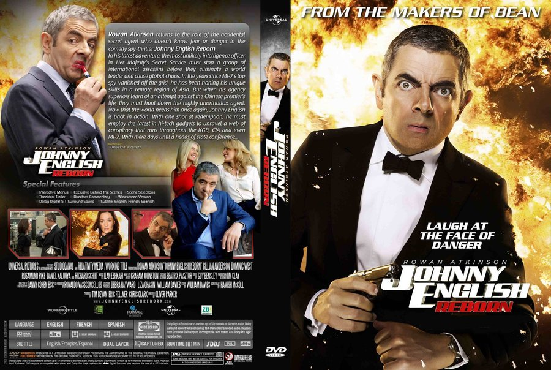
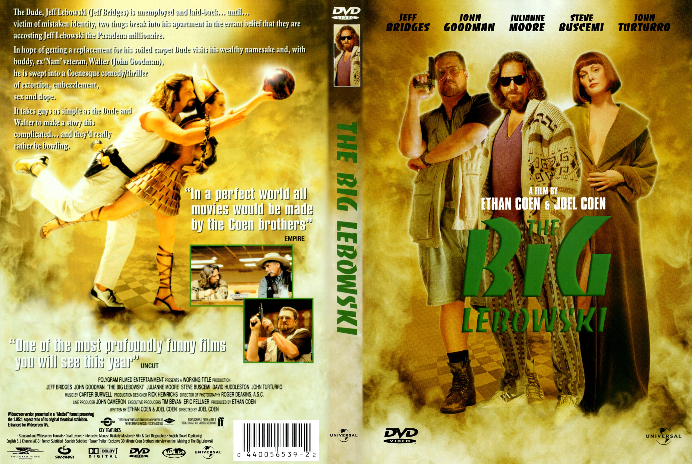

Connor Ingold
Web Developer
For the brave souls who get this far: You are the chosen ones, the valiant knights of programming who toil away, without rest, fixing our most awful code. To you, true saviors, kings of men, I say this: never gonna give you up, never gonna let you down, never gonna run around and desert you. Never gonna make you cry, never gonna say goodbye. Never gonna tell a lie and hurt you.
 |
Pulp FictionLVincent Vega and Jules Winnfield are hitmen with a penchant for philosophical discussions. In this ultra-hip, multi-strand crime movie, their storyline is interwoven with those of their boss, gangster Marsellus Wallace (Ving Rhames) ; his actress wife, Mia (Uma Thurman) ; struggling boxer Butch Coolidge (Bruce Willis) ; master fixer Winston Wolfe (Harvey Keitel) and a nervous pair of armed robbers, "Pumpkin" and "Honey Bunny". |
|  |
Johnny EnglishPascal Sauvage a villain intent on stealing Britain's Crown Jewels, has murdered the country's top undercover agents, and mediocre spy Johnny English is ordered to prevent further mayhem. But even with help from quick-thinking sidekick Bough, the goofy agent lands himself in one precarious situation after another. Only when he meets up with Interpol crime-fighter Lorna Campbell is Johnny able to chip away at Pascal's defenses. |
|  |
Big LebowskiJeff Bridges plays Jeff Lebowski who insists on being called "the Dude," a laid-back, easygoing burnout who happens to have the same name as a millionaire whose wife owes a lot of dangerous people a whole bunch of money -- resulting in the Dude having his rug soiled, sending him spiraling into the Los Angeles underworld. |